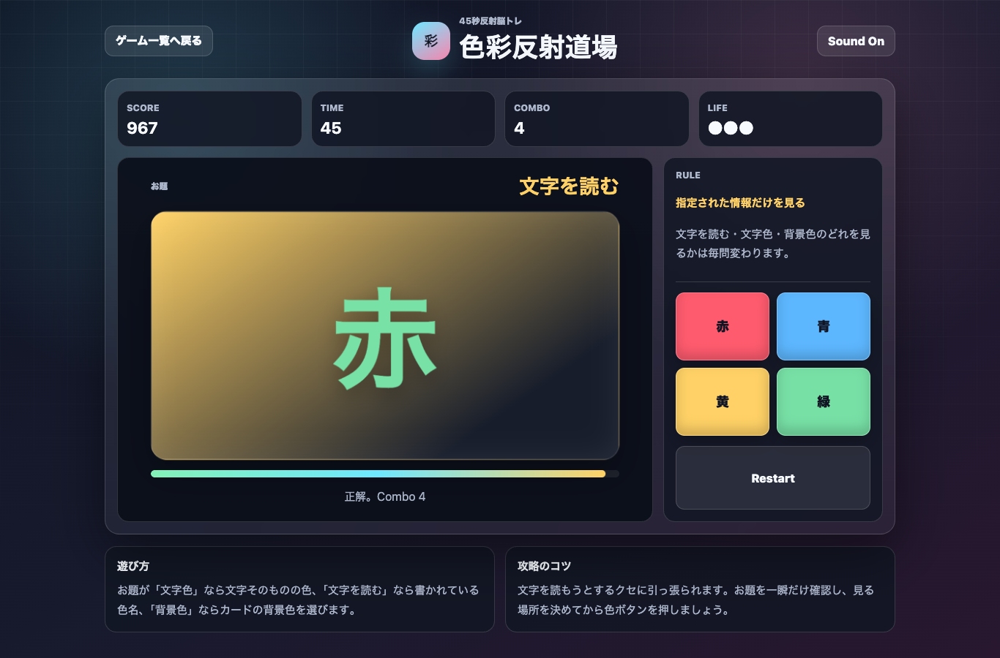

遊び方
- 毎問表示されるお題を確認します。
- 「文字色」なら文字そのものの色、「文字を読む」なら書かれている色名、「背景色」ならカードの背景色を選びます。
- 45秒以内にスコアとコンボを伸ばしましょう。
反射神経 / 脳トレ / 無料ブラウザゲーム
色彩反射道場は、文字色・文字を読む・背景色を瞬時に見分ける45秒の無料ブラウザ反射神経ゲームです。スマホでもPCでも、インストール不要で短時間に集中力と判断力を試せます。

文字を読もうとするクセに引っ張られやすいゲームです。お題を見た瞬間に「見る場所」を決め、文字を読む前に色ボタンへ視線を移すとコンボが伸びます。
色彩反射道場は、ストループ効果を題材にした短時間ミニゲームです。無料ブラウザゲーム 暇つぶし、反射神経ゲーム、脳トレゲームを探している人に向いた、すぐ遊べる判断力トレーニングです。
見るべき場所が毎問変わるため、ただ速いだけではスコアが伸びません。焦りながらも判断を切り替える感覚があり、短時間で何度もベスト更新を狙えます。
はい。無料ブラウザゲーム広場では、インストール不要で無料プレイできます。
スマホ・PC対応です。スマホでは色ボタンをタップするだけで遊べます。
短時間で遊べるミニゲーム、反射神経ゲーム、判断力を使う脳トレゲームを探している人におすすめです。
色彩反射道場と近い無料ブラウザゲームを、目的や端末別の入口から探せます。